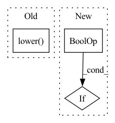

Pattern ID :34152
Before Change
args.n_gpu = torch.cuda.device_count()
set_seed(args)
args.model_type = args.model_type.lower()
if args.n_gpu > 1:
if args.input_file is None:
raise ValueError("Cannot use multiple GPUs when reading from stdin. You should provide an --input_file")After Change
// bart and mbart share the same config
// check which model we are actually using
if args.model_type == "bart":
if config.normalize_before and config.add_final_layer_norm and config.scale_embedding :
args.model_type = "mbart"
else:
raise ValueError("Model should be either GPT2, BART, or MBART")In pattern: SUPERPATTERN
Frequency: 4
Non-data size: 3
Instances Fragment ID: 97539472
Project Name: stanford-oval/genienlp
Commit Name: f8b83686800672a7a980986cb6fb7d4b63802acb
Time: 2020-05-13
Author: mehrad@stanford.edu
File Name: genienlp/paraphrase/run_generation.py
M Class Name: AnonimousClass
N Class Name: AnonimousClass
M Method Name: main(1)
N Method Name: main(1)
M Parent Class:
N Parent Class:
M File Name: genienlp/paraphrase/run_generation.py
N File Name: genienlp/paraphrase/run_generation.py
M Start Line: 116
M End Line: 144
N Start Line: 117
N End Line: 131
Before Change
class ImageFileWriter:
def __init__(self, root_directory, output_format="nrrd", filename_format="{key}"):
self.root_directory = root_directory
self.output_format = output_format.lower()
self.filename_format = filename_format
self.writer = sitk.ImageFileWriter()
def add(self, key, image):After Change
self.root_directory = root_directory
self.filename_format = filename_format
self.writer = sitk.ImageFileWriter()
if create_dirs and not os.path.exists(self.root_directory) :
os.makedirs(self.root_directory)
def add(self, key, image): Fragment ID: 97539488
Project Name: bhklab/med-imagetools
Commit Name: 5fb8266c85e41ab0f9211f55567085fc3fd5035d
Time: 2020-02-27
Author: mkazmierski.poznan@gmail.com
File Name: imgtools/io/writers.py
M Class Name: ImageFileWriter
N Class Name: ImageFileWriter
M Method Name: __init__(4)
N Method Name: __init__(4)
M Parent Class:
N Parent Class:
M File Name: imgtools/io/writers.py
N File Name: imgtools/io/writers.py
M Start Line: 10
M End Line: 12
N Start Line: 10
N End Line: 17
Before Change
for name, module in model.named_children():
name = prefix + ("." if prefix != "" else "") + name
// Do not recurse in children if we are skipping the module
if module.__class__.__name__.lower() in self.skip_layers:
pass
// Recurse into module if we are not skipping it but it is also not
// a known module to KFACAfter Change
module not in self.hook_layers):
self.register_module(module, name)
// Recurse into module unless we are skipping it
elif module_name not in self.skip_layers and module is not model :
self.register_modules(module, prefix=name)
def register_shared_module(self, main_module, second_module, reverse_hooks=False): Fragment ID: 97539473
Project Name: gpauloski/kfac_pytorch
Commit Name: 34571cae966adae05f5c8e2b06f704d45255137f
Time: 2020-09-18
Author: gpauloski@yahoo.com
File Name: kfac/preconditioner.py
M Class Name: KFAC
N Class Name: KFAC
M Method Name: register_modules(3)
N Method Name: register_modules(3)
M Parent Class: optim.Optimizer
N Parent Class: optim.Optimizer
M File Name: kfac/preconditioner.py
N File Name: kfac/preconditioner.py
M Start Line: 275
M End Line: 290
N Start Line: 275
N End Line: 287
Before Change
fn_modules = ["trident.layers.tensorflow_activations"]
try:
if isinstance(fn_name,str):
if fn_name.lower() ==fn_name:
activation_fn = get_function(fn_name, ["trident.layers.tensorflow_activations"] if fn_name in __all__ else fn_modules)
return activation_fn
else:After Change
if fn_name is None:
return None
elif inspect.isclass(fn_name) and inspect._is_type(fn_name) :
return fn_name()
elif isinstance(fn_name, Layer):
return fn_name Fragment ID: 97539483
Project Name: allanyiin/trident
Commit Name: be0b3b73fa0bb531bd579b5341b36492ceb6a56e
Time: 2020-07-12
Author: allan@asiaminer.com.tw
File Name: trident/layers/tensorflow_activations.py
M Class Name: AnonimousClass
N Class Name: AnonimousClass
M Method Name: get_activation(1)
N Method Name: get_activation(1)
M Parent Class:
N Parent Class:
M File Name: trident/layers/tensorflow_activations.py
N File Name: trident/layers/tensorflow_activations.py
M Start Line: 524
M End Line: 555
N Start Line: 568
N End Line: 590